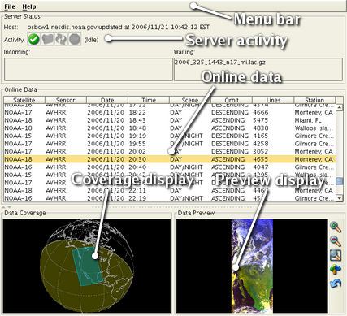

CoastWatch Status Tool Help: Overview
The CoastWatch Status Tool is a part of the CoastWatch Software
Library and Utilities package. You can use the tool to monitor the
activity of a CoastWatch data processing server and preview data of
interest. The tool is designed for use by research personnel and
system operators.

The figure above shows the various components of the CoastWatch
Status Tool window. The components perform the following tasks:
- Menu bar
- Access to the new server and quit commands, and the help
system.
- Server activity
- Shows the server host name, latest update time, activity
icons and details, and incoming/waiting data files.
- Online data
- Shows the current online satellite data with details on
satellite, sensor, date, time, and so on and allows selection
of individual passes.
- Coverage display
- Shows a highlighted footprint of the currently selected
satellite pass with solar terminator, coastlines and grid.
- Preview display
- Shows a preview image of the currently selected satellite
pass.
The following help sections contain more details on using
the tool: